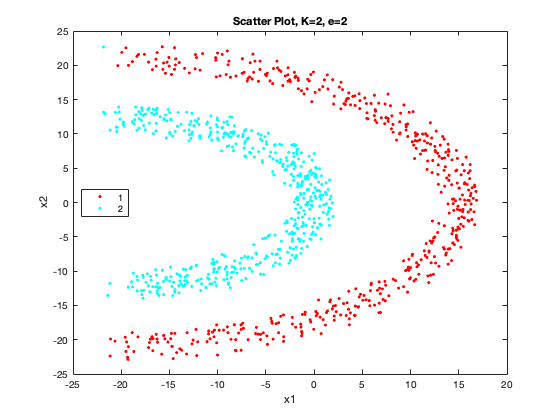
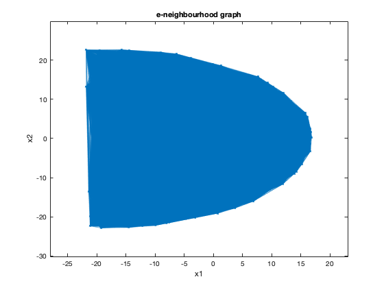

data = readtable('spectral.csv');
x1 = data.Var1;
x2 = data.Var2;
Y = data.Var3;
Y(Y==1) = 2;
Y(Y==0) = 1;
X = [x1 x2];
disp('5a)');
figure(1)
disp('Scatter Plot')
gscatter(x1, x2, Y);
title('Scatter Plot')
snapnow;
disp('5b)')
figure(2);
[idx, C] = kmeans(X, 2, 'Start', 'Sample', 'Replicates',100, 'MaxIter', 200);
disp('Scatter Plot')
gscatter(x1, x2, idx);
xlabel('x1');
ylabel('x2');
title('Scatter Plot')
hold on;
plot(C(:,1), C(:,2), '.k', 'MarkerSize', 15);
title(strcat('kmeans, K=2'));
legend('1','2','centroids')
snapnow;
print_mis_classification(idx, Y);
disp("5c) Spectral Clustering");
figure(3);
A_1 = build_adjacency_matrix(X, 0.5);
G = graph(A_1);
plot(G,'XData',X(:,1),'YData',X(:,2));
xlabel('x1');
ylabel('x2');
title('e-neighbourhood graph , e=0.5.');
snapnow;
figure(4);
A_2 = build_adjacency_matrix(X, 1);
G = graph(A_2);
plot(G,'XData',X(:,1),'YData',X(:,2));
xlabel('x1');
ylabel('x2');
title('e-neighbourhood graph , e=1.');
snapnow;
figure(5);
A_3 = build_adjacency_matrix(X, 2);
G = graph(A_3);
plot(G,'XData',X(:,1),'YData',X(:,2));
xlabel('x1');
ylabel('x2');
title('e-neighbourhood graph , e=2.');
snapnow;
figure(6);
[idx, C] = perform_spectral_clustering(A_1, 2);
gscatter(x1, x2, idx);
xlabel('x1');
ylabel('x2');
hold on;
title(strcat('Scatter Plot, K=2, e=0.5'));
legend('1','2');
snapnow;
print_mis_classification(idx, Y);
figure(7);
[idx, C] = perform_spectral_clustering(A_2, 2);
gscatter(x1, x2, idx);
xlabel('x1');
ylabel('x2');
hold on;
title(strcat('Scatter Plot, K=2, e=1'));
legend('1','2');
snapnow;
print_mis_classification(idx, Y);
figure(8);
[idx, C] = perform_spectral_clustering(A_3, 2);
gscatter(x1, x2, idx);
xlabel('x1');
ylabel('x2');
hold on;
title(strcat('Scatter Plot, K=2, e=2'));
legend('1','2');
snapnow;
print_mis_classification(idx, Y);
disp('5d)')
A_1 = build_gaussian_sim_graph(X, 0.1);
figure(9);
[idx, C] = perform_spectral_clustering(A_1, 2);
gscatter(x1, x2, idx);
xlabel('x1');
ylabel('x2');
hold on;
title(strcat('spectral clustering, K=2, sigma=0.1'));
legend('1','2');
snapnow;
print_mis_classification(idx, Y);
A_2 = build_gaussian_sim_graph(X, 0.5);
figure(10);
[idx, C] = perform_spectral_clustering(A_2, 2);
gscatter(x1, x2, idx);
xlabel('x1');
ylabel('x2');
hold on;
title(strcat('spectral clustering, K=2, sigma=0.5'));
legend('1','2');
snapnow;
print_mis_classification(idx, Y);
figure(11);
[idx, C] = perform_spectral_clustering(A_3, 2);
gscatter(x1, x2, idx);
xlabel('x1');
ylabel('x2');
hold on;
title(strcat('spectral clustering, K=2, sigma=1'));
legend('1','2');
snapnow;
print_mis_classification(idx, Y);
figure(12);
A_3 = build_gaussian_sim_graph(X, 1);
G = graph(A_3);
plot(G,'XData',X(:,1),'YData',X(:,2));
xlabel('x1');
ylabel('x2');
title('e-neighbourhood graph');
snapnow;
function [idx, C] = perform_spectral_clustering(W, k)
D = diag(sum(W,2));
L = D - W;
[U,~] = eigs(L,k,1e-13);
[idx, C] = kmeans(U, k, 'Start', 'Sample', 'Replicates', 100, 'MaxIter', 500);
end
function A=build_adjacency_matrix(X, e)
sz = size(X,1);
A = zeros(sz, sz);
for i=1:sz
for j=i+1:sz
dist = norm(X(i,:)-X(j,:));
if dist <= e
A(i,j) = 1;
A(j,i) = 1;
end
end
end
end
function A=build_gaussian_sim_graph(X, sigma)
sz = size(X,1);
A = zeros(sz, sz);
for i=1:sz
for j=i+1:sz
w = exp(-(norm(X(i,:)-X(j,:))^2/(2*sigma^2)));
A(i,j) = w;
A(j,i) = w;
end
end
end
function print_mis_classification(pred, Y)
sz_1 = sum(Y==1);
sz_2 = sum(Y==2);
C(1) = sum(pred(1:sz_1,:)==1);
C(2) = sum(pred(1:sz_1,:)==2);
[max_val, id] = max(C);
mishit_1 = abs(sz_1-max_val)/sz_1;
if id == 1
mishit_2 = abs(sz_2 - sum(pred(sz_2:end,:)==2))/sz_2;
else
mishit_2 = abs(sz_2 - sum(pred(sz_2:end,:)==1))/sz_2;
end
fprintf("Incorrectly classified fraction for category 1 = %f \n", mishit_1);
fprintf("Incorrectly classified fraction for category 2 = %f \n", mishit_2);
end
5a)
Scatter Plot
5b)
Scatter Plot
Incorrectly classified fraction for category 1 = 0.430000
Incorrectly classified fraction for category 2 = 0.540000
5c) Spectral Clustering

Incorrectly classified fraction for category 1 = 0.008000
Incorrectly classified fraction for category 2 = 1.000000
Incorrectly classified fraction for category 1 = 0.012000
Incorrectly classified fraction for category 2 = 1.000000

Incorrectly classified fraction for category 1 = 0.000000
Incorrectly classified fraction for category 2 = 0.002000
5d)
Incorrectly classified fraction for category 1 = 0.000000
Incorrectly classified fraction for category 2 = 0.986000
Incorrectly classified fraction for category 1 = 0.000000
Incorrectly classified fraction for category 2 = 0.000000
Incorrectly classified fraction for category 1 = 0.000000
Incorrectly classified fraction for category 2 = 0.002000
